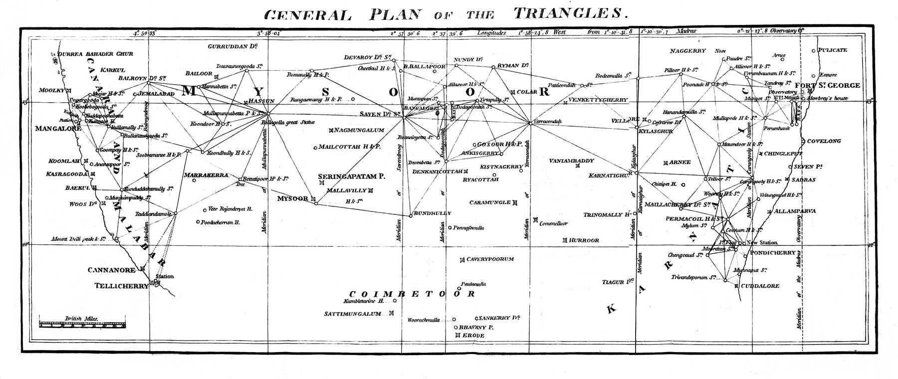

Published with William Lambton’s account of the trigonometrical operations connecting Fort St George and Mangalore, this plate turns southern India into a chain of measured triangles. It is an early visual statement of the survey system that would develop into the Great Trigonometrical Survey.
Authorship and object
The plate accompanied Lambton’s “An Account of the Trigonometrical Operations in crossing the Peninsula of India, and connecting Fort St. George with Mangalore,” published in volume 10 of Asiatic Researches in 1811. The paper reported work begun in 1803 and extended from the Coromandel coast to the Malabar coast, a measured connection of more than 360 miles across the peninsula.
Geometry over terrain
The governing image is not a political territory or a picturesque landscape but a network: stations joined into principal triangles, long sides checked against measured baselines, and east–west and meridional chains made to support one another. Hills and coasts matter because they provide stations and termini. The plate makes the country legible as relationships among observed points.
The work hidden by the line
The printed geometry suppresses the material expedition that produced it — chains laid and corrected, signals raised on distant hills, instruments carried across the Ghats, routes negotiated, and observations sustained by a large survey establishment. The named European surveyor occupies the title, while the Indian labour, guidance and local knowledge on which the operation depended largely disappear into the finished line.
The gaze
This is the survey turn in its purest visual form. Earlier maps compiled places and routes; Lambton constructs a framework within which later places and routes can be fixed. Measurement becomes an infrastructure of authority. Yet the plate is also a reminder that the apparently impersonal grid was socially produced: imperial science presented as a universal geometry, assembled on the ground through unequal collaboration.
Source and image
The reproduced plate is available through Wikimedia Commons, which identifies the image as public domain. The original article is available in a digitised copy of Asiatic Researches, volume 10.